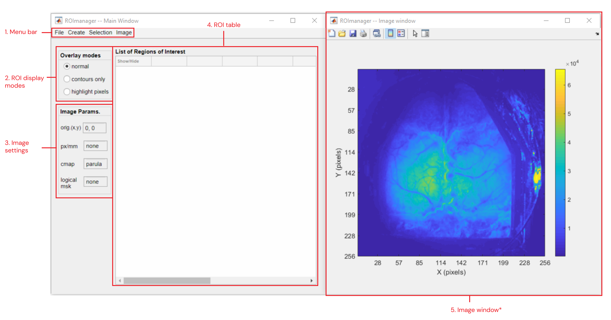

ROImanager
ROImanager is a graphical interface dedicated to create, edit and save regions of interest (ROIs) associated to an image. In addition, it provides preset ROIs of the top projection of mouse cortical areas from the Mouse Allen Brain Atlas. The ROImanager app can be called from the Visualization tab, from the Add-ons tab in the DataViewer app or as standalone (see syntax below).
Syntax
ROImanager(): Opens only the main GUI.
ROImanager('C:/PATH/datFile.dat'): Opens the first frame of the imaging data from datFile.dat. The .dat file created by one of the analysis functions of umIT.
ROImanager(data): Opens the image contained in the variable data from the Matlab's workspace. data can be either a 2-D numeric matrix or a 3-D matrix encoding an RGB image. In the latter case, the app will automatically transform the data in a grayscale image using Matlab's built-in function rgb2gray.
ROImanager('C:/PATH/ROImasks_data.mat'): Opens the image and ROIs contained in the ROImasks_data.mat. The ROImasks_xxxxx.mat is created by ROImanager to store ROI information.
Sections
The interface

Main components of ROImanager app
- File >>
- New: Creates a new ROI table. Existing ROIs will be erased
- Open ROImasks file: Opens dialog to load an ROImasks_xxxxx.mat file
- Open Image: Opens dialog to load a new image. Images can be obtained from a .dat file, a variable stored in a .mat file or from an image file (.PNG, .JPEG or .TIF). RGB images will be automatically transformed to grayscale 2-D images
- Save File: Saves the ROI data to the current ROImasks_xxxxx.mat file
- Save as...: Opens dialog to save ROI data to a new ROImasks_xxxxx.mat file
- Import from...
Note
The ROImanager app accepts ROIs only in the following formats:
- 2D or 3D logical arrays
- 2D label matrix
For more information, read the section on
importing ROIs.
- .mat file: import ROIs stored in a .mat file.
- workspace: import ROIs stored in variables from Matlab's workspace
- Export table to CSV: export the content of the ROI table (4) to a .csv file
- Create >>
- Polygon: creates a new customizable polygonal ROI.
- Point: creates a new point ROI. A point ROI consists of a single pixel from the image.
- Mouse Allen Brain Atlas >>
- Areas >>
- Select areas: opens a dialog box to select the ROIs to be created
- Options...: opens optional parameters window
- Centroids >>
- Select areas: opens a dialog box to select the ROIs to be created
- Options...: opens optional parameters window
- From threshold...: launches atool to create ROIs from threshold
- Delete all ROIs: deletes existing ROIs and clears the ROI table
- Selection >>
Note
ROIs are selected by checking the boxes in the Selection column of the ROI table.
- Edit >>
- Color: Change color of the selected ROI. Single selection only!
- Shape >>
Important
Works only with polygonal ROIs!
- Constrained Edit: Performs scaling, rotation and translation of selected ROIs. Can edit more than one ROI at once. In this case, the central point of rotation and scaling is the centroid of the ROI set.
- Unconstrained Edit: Free edit of the shape and position of an ROI by changing/adding/deleting its vertices. Single selection only!
- Delete: erases selected ROI(s) from the table. Multi-selection allowed
- ROI math >>
- split: splits a multi-region ROI
- merge: merges several ROIs into one
- intersect: intersects two or more ROIs
- XOR: performs logical exclusive-OR operation
- subtract: subtracts one ROI from another
- Image >>
- Set Origin >> Sets the axis origin (0,0) of the image
- New: interactive selection of a new origin.
- Import from file: Import the origin coordinates stored in a variable from a .mat file. The coordinates must be inside the image’s limits.
- Align image to origin: Allows the rotation of the image around the origin. This option is disabled when ROImanager is used as Add-on in DataViewer app.
- Set pixel size: Sets the pixel ratio in pixel per millimeter.
- Set colormap: Sets image colormap and clipping values.
- Mask >> Creates a logical mask to exclude non-pertinent regions of the image
- Draw new: creates a new mask by drawing a polygon. Existing masks will be overwritten.
- Import from file...: loads a logical mask from a variable inside a .mat file.
- Show/Hide: toggles mask display over the image.
- Delete: removes existing mask.
- Image reference file... >>
- Export: exports the image parameters as an ImageReferenceFrame.mat file which is used in the automatic and manual alignment functions of umIT
- Import: imports the image parameters from a ImagingReferenceFrame.mat file
2. ROI display modes
There are 3 options to display the ROIs over the image:
- normal: ROIs are displayed with a semi-transparent face color with black contours.

- contours only: ROIs are displayed as coloured contours and no face color.

- highlight pixels: ROI shapes are shown as contours only while the pixels inside the ROIs are highlighted.
3. Image settings
Panel showing the current values of the image parameters:
- orig(x,y): X,Y coordinates of the reference point
- px/mm: pixel size (in pixel per millimeter)
- cmap: colormap ('none' or colormap name)
- logical msk: logical mask. ('none' or 'Set')
4. ROI table
A table containing the ROI name, type (Shape or point), date of creation, centroid coordinates as well as descriptive statistics of the ROIs and selected pixels.
Important
The descriptive statistics of the ROIs (min/max, median, mean(+-STD)) refer to the ROI pixels from the frame used to create the ROI. This information is not automatically updated when the frame is changed!
5. Image window
Figure containing the image (frame) used to plot the ROIs. This figure is absent when ROImanager is called as an Add-on from the DataViewer app.